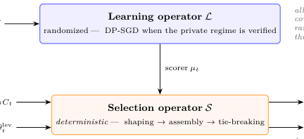

Decoupled Learning and Selection in Slate Recommendation for Privacy and Stability Under Noisy Scores (噪声打分下的隐私与稳定性：列表推荐中学习与选择的解耦)
- 会议/期刊: ACM RecSys 2026
- 作者与机构: Sam Urmian, Mohammad Khalil (University of Bergen, SLATE); Qinyi Liu (City University of Macau)
- 推荐链路定位: 重排 / 列表级选择（打分器之后的确定性 slate 组装层）
- 研究方向: 去偏公平、可信隐私与工业架构 / 多任务学习与列表级重排
- 论文原文: https://arxiv.org/abs/2609.29453v1
- 开源代码: https://github.com/mlgorithm/decoupled-slate-recommendation-recsys-2026
TL;DR (1分钟核心速览)
工业列表推荐普遍是「模型打分 + 规则层选列表」两段式，但 DP、公平、校准等保证只覆盖打分器，规则层（去重、多样性、长度控制、审计日志）的隐私与稳定性无人负责。本文把流程形式化为随机学习算子 \(\mathcal{L}\) + 确定性选择算子 \(\mathcal{S}\)，给出两条结论：(1) 隐私仅在选择器侧输入满足「公开/独立、前序 DP 输出、单独记账」契约时经后处理传递到完整链路与审计轨迹；(2) 提出可审计的 margin 证书 \(M<\Gamma/2\) 保证有序 slate 不变。在 OULAD/EdNet/MovieLens-25M/Amazon 上，锚点权重 \(w=0.75\) 使 Flip@K 相对无锚点下降 53–81%，固定 margin 实验拟合斜率 \(-0.220\)（95% CI \([-0.231,-0.210]\)）逼近理论 \(-1/4\)。
Background & Motivation (背景与核心矛盾)
- 主流范式: 列表推荐 = 学习器打分 + 确定性重排/组装层（MMR 多样性、校准推荐、公平曝光重排、slate size 自适应），后者给定输入完全可复现。
- 前人局限: ① DP 推荐、bandit 遗憾、公平/校准保证均针对学习器，规则层与审计日志被默认为「免费后处理」，但选择器实际还吃候选池、原始用户状态、相似度、锚点分数等非学习器输入，端到端隐私被悄悄破坏；② 打分噪声（DP 噪声、在线更新抖动）如何传导到最终有序列表缺乏可检验的判据，现有 rank-list sensitivity 只谈训练扰动而非选择时刻的充分条件。
- 核心洞察 (Key Insight): 把「哪些随机性属于学习器」与「哪些输入属于选择器」显式分离后，隐私变成后处理契约问题、稳定性变成决策 margin 问题，二者可独立审计、独立失效。
- 本文切入点: 不造新打分器、不造新重排目标，而是给出「隐私作用域契约 + 可日志化的 margin 证书」这一结构性分析框架。
Method (核心方法设计)
1. 整体框架 (Overall Architecture)
每轮策略接收候选池 \(C_t\)，学习算子 \(\mathcal{L}\) 输出物品分数 \(\mu_t\)（私有场景下用 DP-SGD，是链路中唯一被分析的随机性来源），确定性选择算子 \(\mathcal{S}\) 依次执行三阶段：塑形（分数 + 目标邻近度 + 探索奖励）→ 组装（贪心相关性、多样性、新鲜度记忆、slate size \(K_t\)）→ 固定 item-ID 平局打破，输出有序 slate \(S_t\) 与审计轨迹 \(\tau_t\)。轨迹记录候选身份、杠杆参数、塑形分数、相似度、最终列表与平局规则，使决策可精确重放，并直接提供证书所需的 margin 与扰动包络量。隐私经后处理从 \(\mathcal{L}\) 传到 \(\mathcal{S}\) 及 \(\tau_t\)，但作用域由选择器侧每个非学习器输入的状态决定。
flowchart TD
A["交互日志 D"] --> B["学习算子 L（DP-SGD，唯一随机源）"]
B --> C["分数 μ_t"]
C --> D["选择算子 S：塑形→组装→平局打破"]
E["候选池/状态/杠杆/锚点"] --> D
D --> F["有序 slate S_t + 审计轨迹 τ_t"]
D --> G["Margin 证书 M_t < Γ_t/2"]
2. 关键设计拆解 (Key Designs)
-
隐私作用域契约（Privacy-Scope Contract）：痛点是非学习器输入被默认视为「无害」。本文将选择器侧输入分为四类状态：(i) 公开或独立于 \(D\)；(ii) 前序 DP 输出或其确定性后处理；(iii) 单独 DP 记账的输出（预算需组合）；(iv) 显式条件化输入。仅 (i)–(iii) 支持端到端声明，(iv) 只能得到「以该输入为条件」的弱声明。若每用户最多贡献 \(B\) 条受保护轮次记录，记录级 \((\varepsilon,\delta)\)-DP 经群隐私提升为 $\(\Big(B\varepsilon,\ \delta\sum_{j=0}^{B-1}e^{j\varepsilon}\Big)\text{-DP}.\)$ 直觉：确定性选择器本身不消耗预算，但会把「条件化」伪装成「端到端」，契约把这一漏洞显式化；非私有锚点可支撑稳定性分析，却必须被排除在 DP 声明之外。
-
Margin 证书（Margin-Certified Selector Stability）：痛点是分数扰动是否改变最终列表缺乏可检验判据。设贪心第 \(q\) 步参考分数 \(\mu^0\) 下选中 \(i_q^0\)，定义步内 margin 与全局 margin $\(\Gamma_q=F_{\mu^0_q}(i_q^0\mid S^0_{q-1})-\max_{j\neq i_q^0}F_{\mu^0_q}(j\mid S^0_{q-1}),\quad \Gamma=\min_q\Gamma_q,\)$ 若沿参考轨迹每个候选目标移动满足 \(|F_\mu(i\mid S^0_{q-1})-F_{\mu^0}(i\mid S^0_{q-1})|\le M\) 且 \(M<\Gamma/2\)，则 \(\mu\) 与 \(\mu^0\) 产生相同有序 slate。直觉：每个候选最多移动 \(M\)，参考 gap 最多缩 \(2M\)，\(\Gamma-2M>0\) 保证归纳每一步贪心选择不变。实现上用事后包络 \(M_t=(1-\lambda_t)\|\mu-\mu^0\|_\infty\) 做日志不等式健全性检查。
-
锚点混合的 Top-K 翻转界与训练/推理开销：对原始 top-\(K\)，margin 退化为锚点 gap \(\gamma\)（原 top-\(K\) 与其余候选的分差），成对噪声下翻转概率满足 $\(P_{\text{flip}}\lesssim K(|C|-K)\exp\!\Big[-\frac{\gamma^2}{2(1-w)^2\tau^2}\Big],\)$ 独立坐标噪声下指数退化为 \(-\gamma^2/[4(1-w)^2\sigma^2]\)。锚点分数 \(\mu^w_t(i)=w\mu^{\text{ALS}}_t(i)+(1-w)\mu^{\text{neural}}_t(i)\)，\(w\) 越大噪声自适应分数影响越小。训练侧无新增损失项（学习器可为任意 DP 打分器）；推理侧审计只需 \(O(|C_t|)\) 标量字段与至多 \(O(K_t|C_t|)\) 次相似度查询，证书监控仅存 \(O(K_t)\) 个 margin，不引入新的排序 pass。
Experimental Setup & Evaluation Protocol (实验设置与评估协议)
- 数据集与预处理:
| 数据集 | #Users | #Items | #Interactions | 稀疏度/密度 | 特征/场景说明 |
|---|---|---|---|---|---|
| OULAD | 23,351 | 188 | 173,739 | 39.58 / 千对 | 教育，较稠密，闭环主场景 |
| EdNet | 296,701 | 11,555 | 23.4M | 6.82 / 千对 | 教育，稀疏长周期 |
| MovieLens-25M | — | — | — | — | 评分语料，\(\ge 4\) 二值化，仅做原始排序稳定性 |
| Amazon Musical Instruments | — | — | — | — | 评论语料，同上 |
- 数据划分与防穿越 (Splitting Strategy): 闭环实验按用户划分（seed 42），候选池每轮生成一次并在各模式间复用，保证配对差异归因于学习器/选择器而非召回；会话 \(T=20\) 轮（另有 \(T=50\) 长周期变体）。
- 排名评测协议 (Ranking Protocol): 原始排序诊断采用全候选池 top-\(K\)（\(|C|=100\)，\(K=10\)），指标为 \(\text{Flip}@K\) 与 \(\text{Jaccard}@K\)；闭环指标为每轮尝试数、物品级采纳、轮级正确率、固定 IRT 效用探针、目标值跳变、slate 重叠与 Kendall-\(\tau\)。固定 margin 实验每格 64 池 × 500 扰动 = 32,000 次试验。
- 对比基线与超参设置: 基线含 Fixed、Greedy-Target、LinUCB、纯 ALS，以及 BKT/DKT/SAKT 三个教育状态追踪器（仅作打分器接口对照）；自适应打分器为双塔（96 隐藏 / 48 嵌入），ALS 为 32 维 5 epoch；锚点权重主实验 \(w=0.75\)，诊断扫描 \(w\in\{0,0.5,0.75\}\)；闭环比较为会话级配对 bootstrap 95% CI，sign-test \(p\) 值仅作探索性描述、未做多重校正。
Key Experimental Results (实验关键数据)
1. 主实验对比 (Main Results)
| 场景 / 指标 | 纯 ALS | Adaptive（无锚点） | Adaptive+ALS (\(w=0.75\)) | SCPO 变体 | Improv. |
|---|---|---|---|---|---|
| OULAD 轮级正确率 | 基线 | +0.121 [0.105, 0.137] | — | — | +0.121 |
| OULAD 每轮尝试数 | 基线 | +0.714 [0.650, 0.777] | — | — | +0.714 |
| OULAD 效用探针 (\(\times10^{-3}\)) | 基线 | +14.824 [13.172, 16.350] | — | −1.339 vs Adaptive | 显著 |
| EdNet 每轮尝试数 | 基线 | +0.140 [0.115, 0.168] | — | +1.498 vs Adaptive | 较小 |
| EdNet 效用探针 (\(\times10^{-3}\)) | 基线 | +0.032 [−1.062, 1.148] | — | — | 不显著 |
| OULAD Flip@K (\(\sigma=0.10\)) | 0.603 | — | 0.216 | — | −64.2% |
| MovieLens-25M Flip@K (\(\sigma=0.20\)) | 0.875 | — | 0.410 | — | −53.1% |
| Amazon MI Flip@K (\(\sigma=0.20\)) | 0.752 | — | 0.262 | — | −65.2% |
| 固定 margin 拟合斜率 | — | — | −0.220 (CI [−0.231,−0.210], \(R^2\)=0.998) | 参考 −0.250 | 逼近理论 |
| 相关噪声拟合斜率 | — | — | −0.506 (\(R^2\)=0.997) | 参考 −0.500 | 逼近理论 |
2. 消融实验 (Ablation Study)
| 配置 | 主要受影响指标 | 观察结果 |
|---|---|---|
| w/o 目标塑形 | 接受物品目标值、效用探针 | 变化最大，目标分布漂移 |
| w/o 探索项 | 每轮尝试数 | 尝试数下降最明显 |
| w/o 多样性 | 相邻 slate 重叠 | 重叠显著上升 |
| 固定 slate size | 物品级采纳 | 采纳率变化 |
| Adaptive-SCPO vs Adaptive | 效用探针 | OULAD −1.339×10⁻³ / EdNet +1.498×10⁻³，方向不一致 |
| 锚点 \(w\): 0 → 0.75 | Flip@K | 三语料一致单调下降 |
3. 关键实验发现 (Key Findings)
- 锚点加权是稳定性的主开关，而非效用开关：\(w=0.75\) 在三个语料、全部噪声尺度上把 Flip@K 压低 53–81%（如 OULAD \(\sigma=0.10\) 从 0.603 到 0.216），但闭环效用变化在 OULAD 仅 0.005–0.007、EdNet 更小且方向混杂——作者明确只主张「分数噪声衰减」，不主张通用效用提升。
- 证书实现健全但非独立证据：OULAD 全部 320 个候选池 \(\gamma\) 与 \(\Gamma_t\) 为正（中位数 0.0577 / \(7.33\times10^{-4}\)），3,877 次事后扰动零违例；EdNet 8,000 次扰动同样零违例，但 \(M_t\) 由已实现扰动算出，属健全性检查而非前瞻性概率保证。
- 窗口强制选择器换来干净的漂移界，代价不统一：SCPO 在非松弛轮上给出精确漂移包络 \(|\bar d(A_{t+1})-\bar d(A_t)|\le\eta+2\Delta_{\max}+w_t+w_{t+1}\)，软窗口 MMR 仅在 >98% 轮对上满足固定窗口事件；但 SCPO 在 OULAD 掉效用、EdNet 反升，说明「证书更干净」与「下游更好」不可互换。
Highlights, Limitations & Rating (亮点、对比与审稿评价)
- 与代表作对比 (vs. Prior Work): 与 DP 推荐（DP-SGD 协同过滤等）相比，本文不改进学习器，而是补齐「私有打分器 → top-K/重排/审计日志」这段被默认免费的后处理；与 MMR/校准推荐/公平曝光重排相比，本文不优化重排目标，而是给重排层加隐私作用域与可审计稳定性判据；与 rank-list sensitivity、stability-based private top-K 相比，本文方向相反——把已私有的学习器经确定性选择器传播，且证书是选择时刻的日志量而非训练扰动界。
- 可迁移亮点: ① 「margin + 扰动包络」证书可直接嵌入工业重排层做在线监控，只需 \(O(K_t)\) 存储且复用选择阶段已算的量；② 锚点混合（固定非自适应打分器 + 自适应打分器凸组合）是抑制在线更新抖动的低成本手段，适合冷启动/探索流量。
- 审稿级局限批判: ① 隐私侧实验未建立采样机制、\(q\) 的分母与逐轮梯度聚合，标称 \(\varepsilon\approx0.36/0.16/0.07\) 只能算配置压力测试，非经验证的 \((\varepsilon,\delta)\) 曲线，且未设用户贡献上限 \(B\)，无法给出用户级预算；② OULAD/EdNet 无曝光日志，参与度靠模拟器，闭环结论仅为趋势级；证书的零违例是事后健全性检查，且固定 margin 拟合的八格筛选规则未预注册，斜率虽显著偏离 \(-1/4\) 但解释力有限。
- 四维评分: 创新性 ⭐⭐⭐⭐ | 实验扎实度 ⭐⭐⭐ | 方法清晰度 ⭐⭐⭐⭐⭐ | 落地价值 ⭐⭐⭐⭐